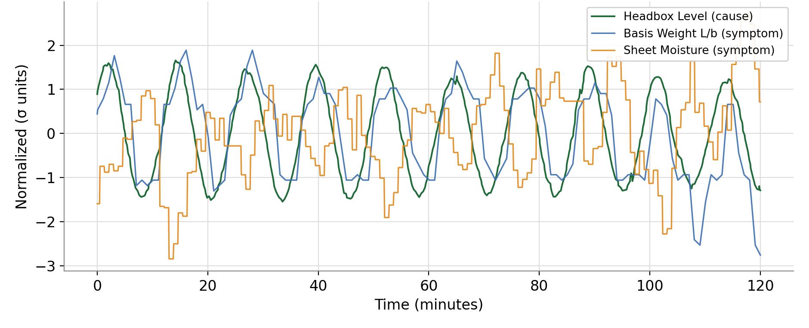

Leading the Intelligent Factory: Chapter 6
Find the source of the swing
Most off-spec comes from a cycle somewhere upstream. Trimming the symptom keeps the cycle. Find the source, and the swing goes away.
Draft for review
Spread 1
The swing you trim is not the swing you fix
The pressure. Off-spec product, rejects and customer complaints. Variation also costs you twice: to stay inside the specification, you run further from the limit than you need to.
What goes wrong today. When a quality variable swings, the crew trims it. Moisture cycles, so steam gets adjusted. The trim treats the effect, and the cycle stays. Many cycles are too slow to see on a trend screen and too fast for the lab to catch. So they become part of how the process runs.
What AI changes. This is the decision of when to intervene, and where. A machine can measure how often a variable cycles. It then tests that cycle against every tag on the process and finds the ones that move with it. The tag that leads is the most likely source. The shape of the signal says whether the fix is tuning or the valve.
What still needs people. Confirming there is a physical path from the source to the swing. Making the fix. Checking that the cycle is gone a week later.
Spread 2
Two real examples
A cycle traced to its loop. A paper machine headbox level swung every 12 minutes, about 7% of span peak to peak. Basis weight and moisture at the reel rode the same cycle. We tested the level against 2,616 active tags. Stock preparation, consistency and the machine chest did not move with it. Basis weight and moisture moved with it almost perfectly, so they were the effect.
The cause was most likely the level loop itself. Its measurement and output were clean sine waves, with the output leading. That is the signature of a loop tuned too hard, not a sticking valve. The fix was a retune: a longer reset and less gain. No steam trim would have removed it.
A cycle that cost product. On another machine, moisture swung slowly, about every 50 minutes. On each swing, moisture ran too high, and paper was rejected about every 50 minutes. The source was a sticking control valve. We found it, and the mill fixed the valve.

Questions for Monday morning
- Which quality variables do we trim by hand every shift?
- Do we know how often each one cycles?
- When a variable swings, who looks for the source, and how?
- How many of our loops have not been tuned since startup?
- How much closer to the specification limit could we run without the swing?
In practice. Envoy's variation studies measure how often a quality variable cycles, test it against every tag on the process, and point to the most likely source.